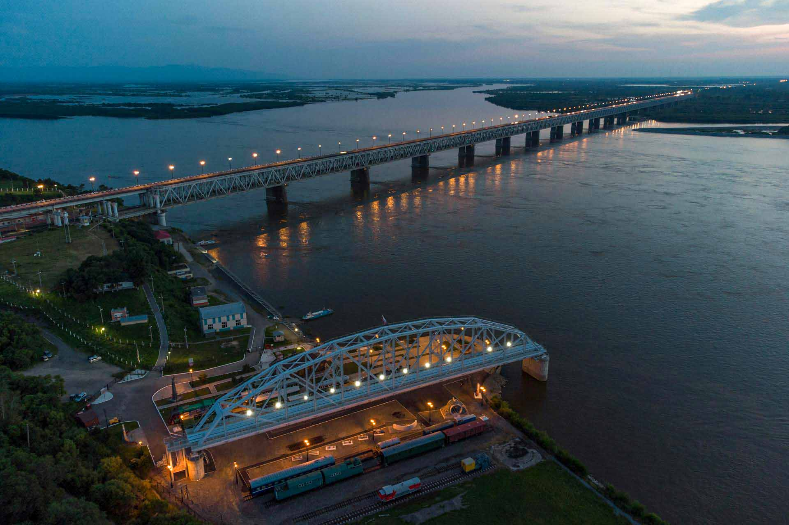

Реки мира

р.Лена
Это самая длинная река России, чей бассейн полностью находится в пределах страны. Она также считается самой крупной в мире, протекающей в зоне вечной мерзлоты.
р.Обь
протяжённость Оби от истока Иртыша составляет 5410 км, однако длина самой Оби — 3650 км. Такие данные делают её второй по протяжённости после Лены.
р.Волга
Волга вдохновляла писателей и художников: ей посвящали картины Левитан, Айвазовский и Репин, о ней писали Островский, Салтыков-Щедрин и Гончаров.

р.Енисей
C древних времён берега реки населяли племена ненцев, селькупов и тунгусов. Они считали её своей кормилицей и местом духовной силы. Позже она стала домом для новых русских переселенцев — казаков и стрельцов, которые образовали первые города в тайге и рядом с бесчисленными притоками реки. По сей день сибиряки называют реку Енисей-батюшка.
р.Амур
Амур — один из символов Дальнего Востока. Река расположена на территории нашей страны и ещё двух государств — Монголии и Китая. В Поднебесной Амур называют Хэйхе, что означает «чёрная река», или Хэйлунцзян — «река чёрного дракона».

р.Колыма
Колыма — река в Якутии и Магаданской области. Если бы мультфильм «Дорога на Эльдорадо» создавали в России, его герои непременно отправились бы на Колыму: здесь сосредоточена четверть запасов золотой руды от общего количества на территории нашей страны.
р.Дон
Могущественный Дон — безмолвный свидетель Куликовской битвы, крупнейшего казацко-крестьянского восстания и гражданской войны.
Крупнейшая река Европы длиной 3530 км. Изгибы реки напоминают летящую птицу.Создание Волжского каскада началось в 1930-х годах и заняло 50 лет. Ежегодно по реке перевозят 50 миллионов тонн грузов. На ее берегах расположены 4 города-миллионника. Для регулирования стока построено 8 гидроэлектростанций.
Особенностью Волги является ее медленное течение - 2-6 км/ч. Вода содержит уникальный состав минералов благодаря известняковым породам бассейна. В отличие от горных рек, Волга имеет равнинный характер.
Дельта Волги имеет форму раскрытой ладони, чтобы создать уникальную экосистему. В водах реки водится 70 видов рыб, включая знаменитую волжскую стерлядь.
Подробнее»

р.Индигирка
От истоков до устья Индигирка протекает по территории Республики Саха. Она считается самой холодной на планете. Зимой температура воздуха здесь опускается до -50 °C, абсолютный минимум — -67,7 °С. Даже летом лёд с реки не всегда сходит полностью (на широте вечной мерзлоты).
р.Хуанхэ
река в Китае, одна из крупнейших по протяжённости рек Азии. Бассейн Хуанхэ считается местом формирования и становления китайского этноса наравне с Янцзы.

р.Северная Двина
Северная Двина — крупная судоходная река (по ней часто сплавляют лес), которая расположена в Вологодской и Архангельской областях. Своё начало берёт в месте слияния рек Сухоны и Юга. Как раз поэтому она и получила своё название: на языке племён балтов «двина» означает «двойная река».
р.Хатанга
Хатанга протекает по Таймырскому Долгано-Ненецкому району Красноярского края. Водоём образован слиянием рек Хеты и Котуя, впадает в Хатангский залив моря Лаптевых.